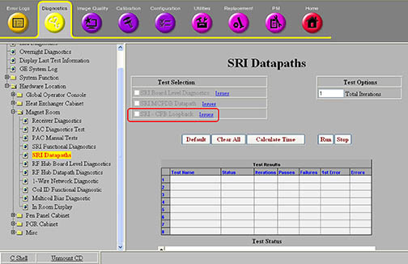

Operating Documentation
Direction 5670000, Rev# 1
Optima MR450w 1.5T Service Methods
Module Version 3.0, Version Date 8/19/08
Operating Documentation |
Diagnostics >> Hardware Location >> Magnet Room >> SRI Datapaths
Illustration 1: SRI - CFB Loopback

The purpose of this diagnostic is to check the fiber optic path between the SRI and the CFB.
This diagnostic uses the system 1-wire bus to command the SRI’s system communication fiber-optic cable into a loopback mode. The CAN Fiber-optic Board (CFB) then performs a quick cable connection check. The loopback test is intended to indicate if the cable is present and does not perform data rate testing.
SRI to CFB fiber-optic cable
SRI
CFB
Fiber-optic cable between SRI and CFB
SRI
CFB
A complete system is required. No special configurations are necessary.
This diagnostic is available from the Common Service Desktop when required system components are available.
For further information, refer to the System Block Diagrams.
Select the SRI - CFB Loopback test.
Click [Run].
Ensure that the diagnostic passes by reviewing the status in the Test Results table.
Review the error log and corresponding extended error messages for subsequent actions.
| ||||
| Prior to scanning, a TPS reset is required. | ||||